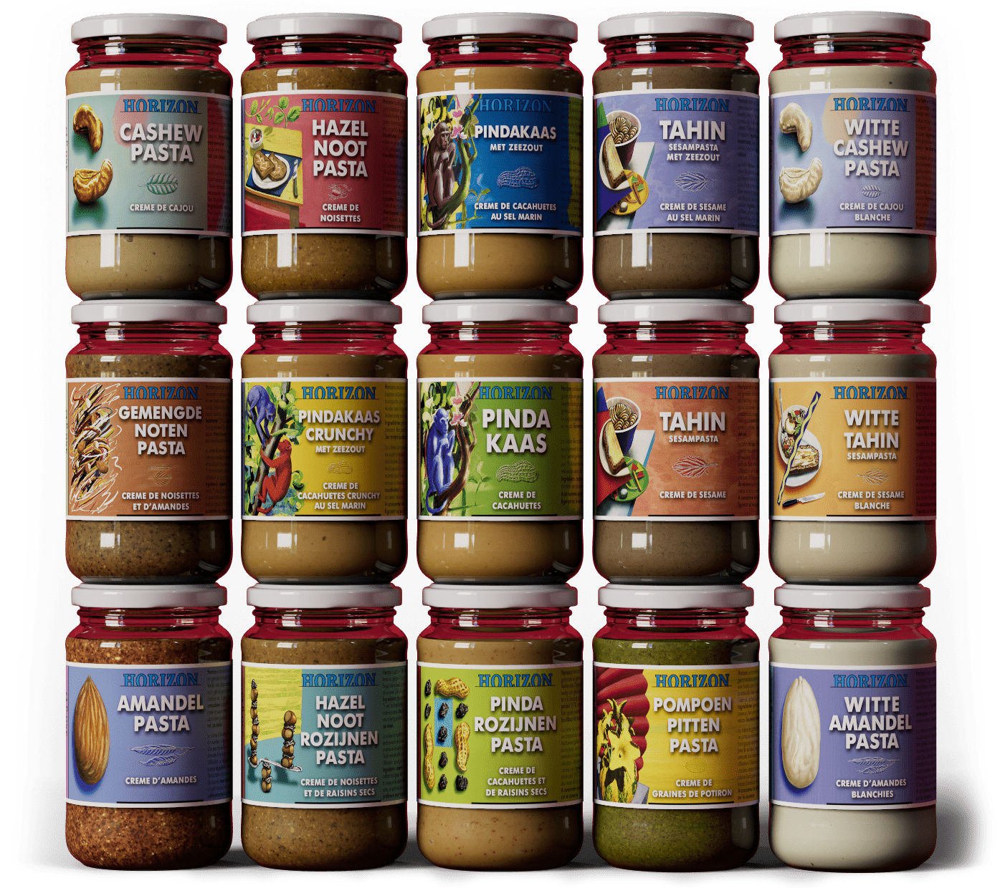
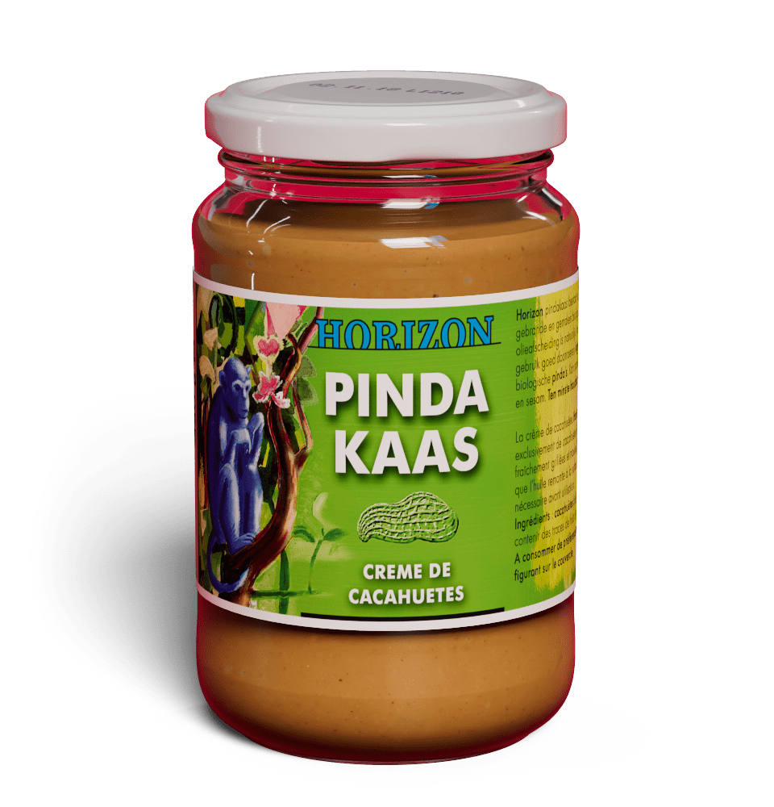
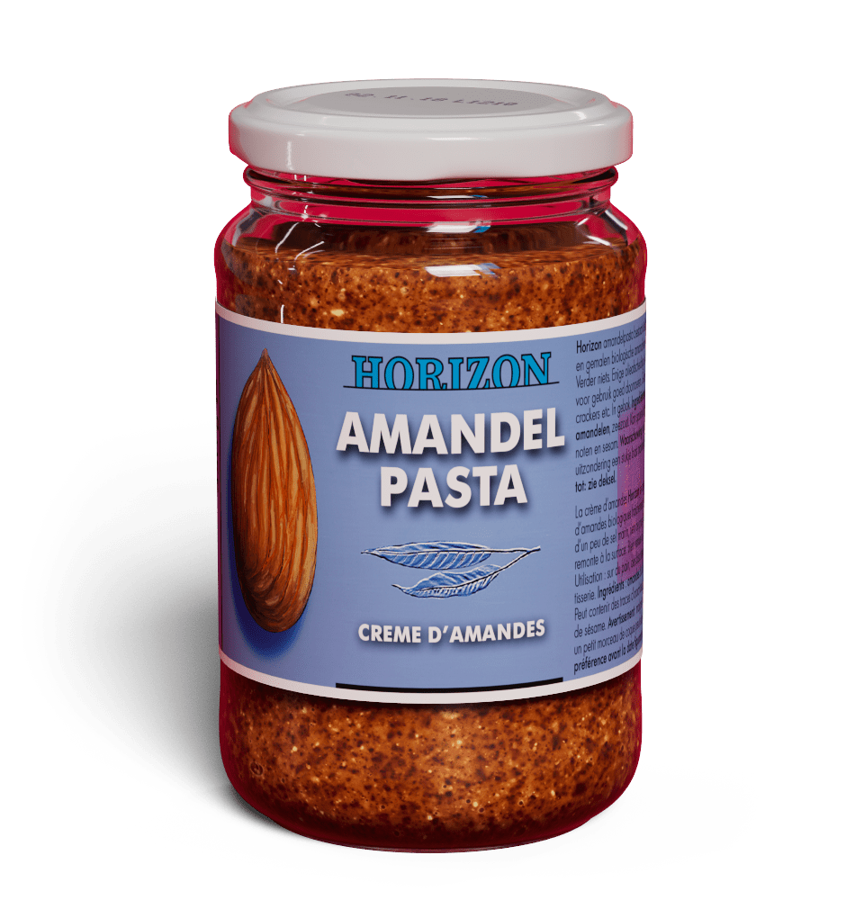
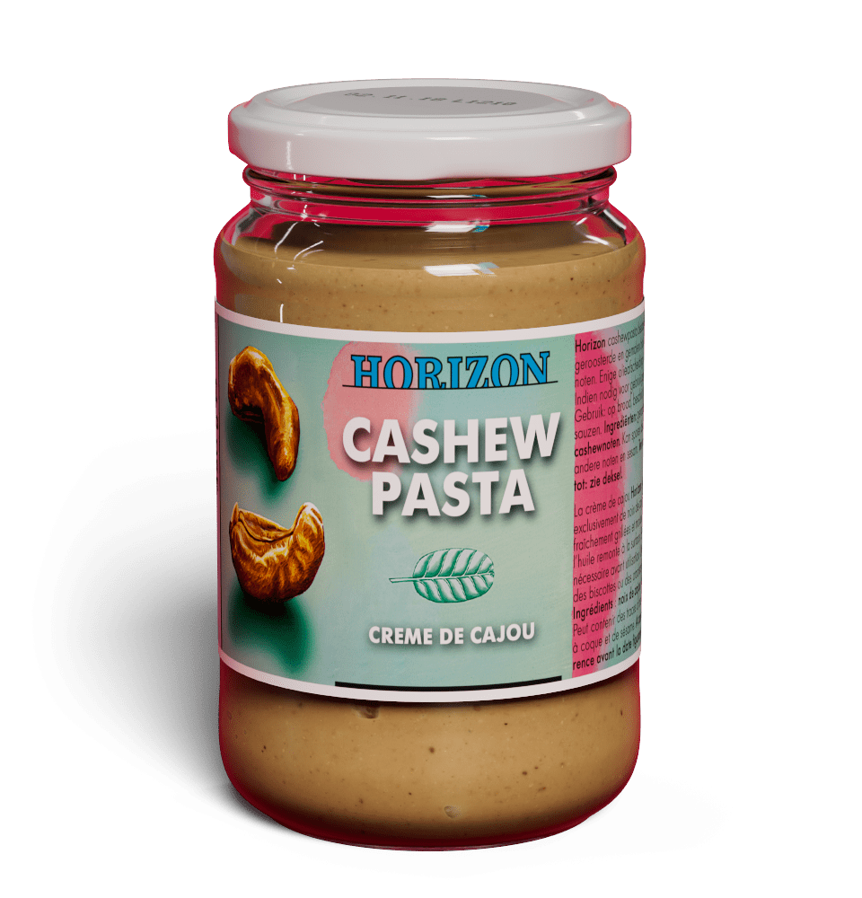
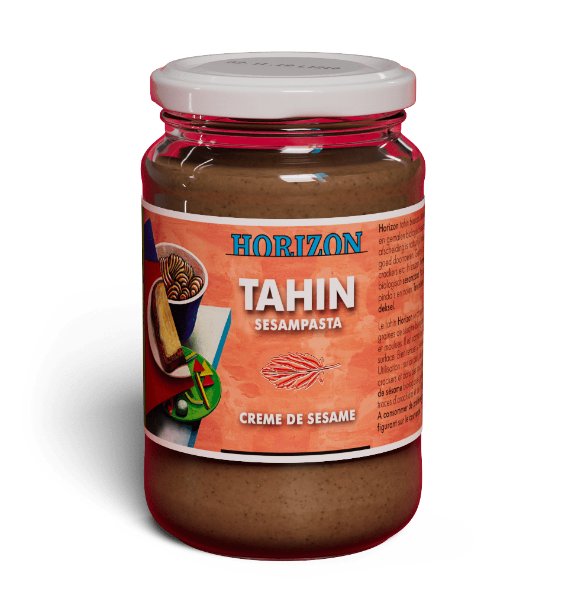
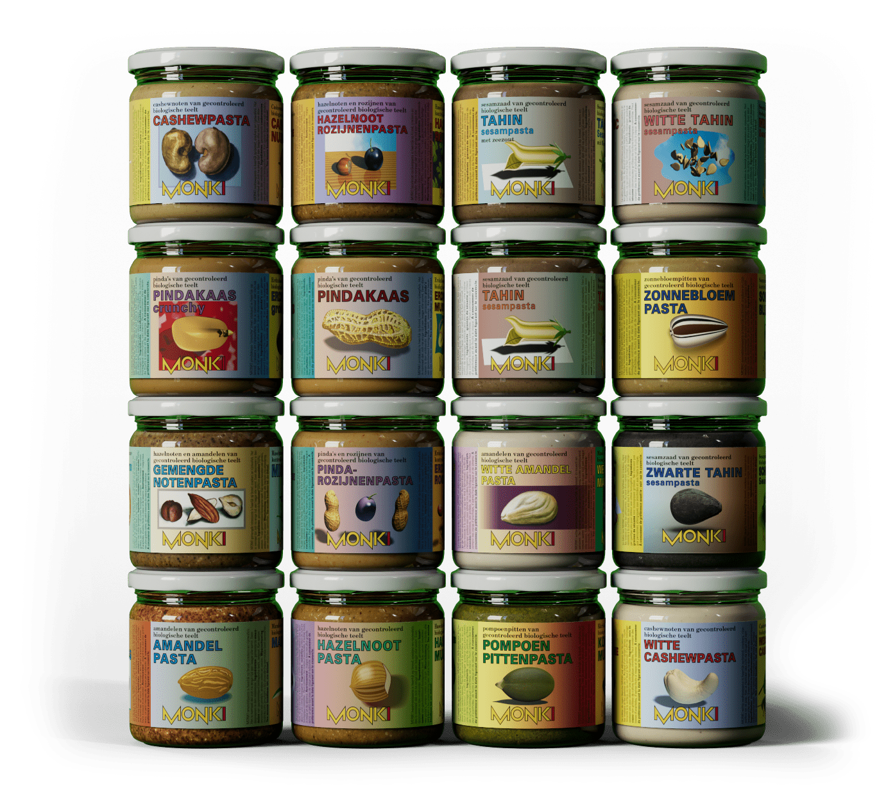
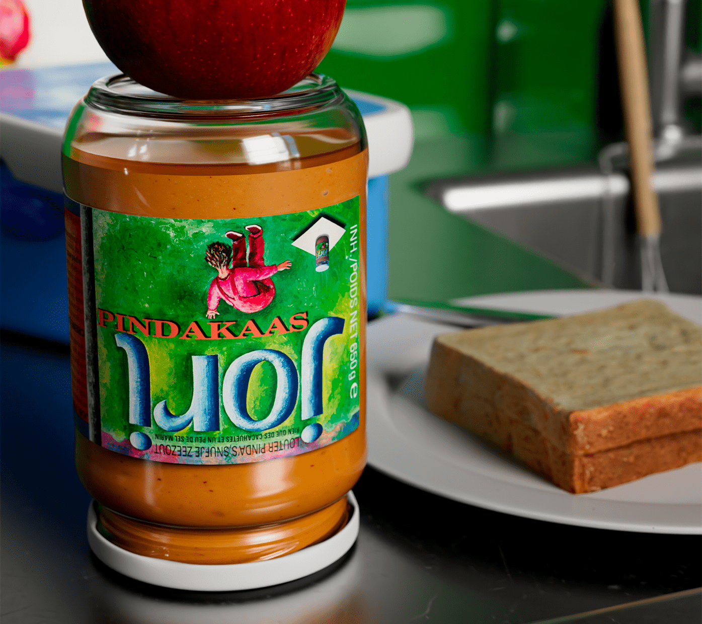
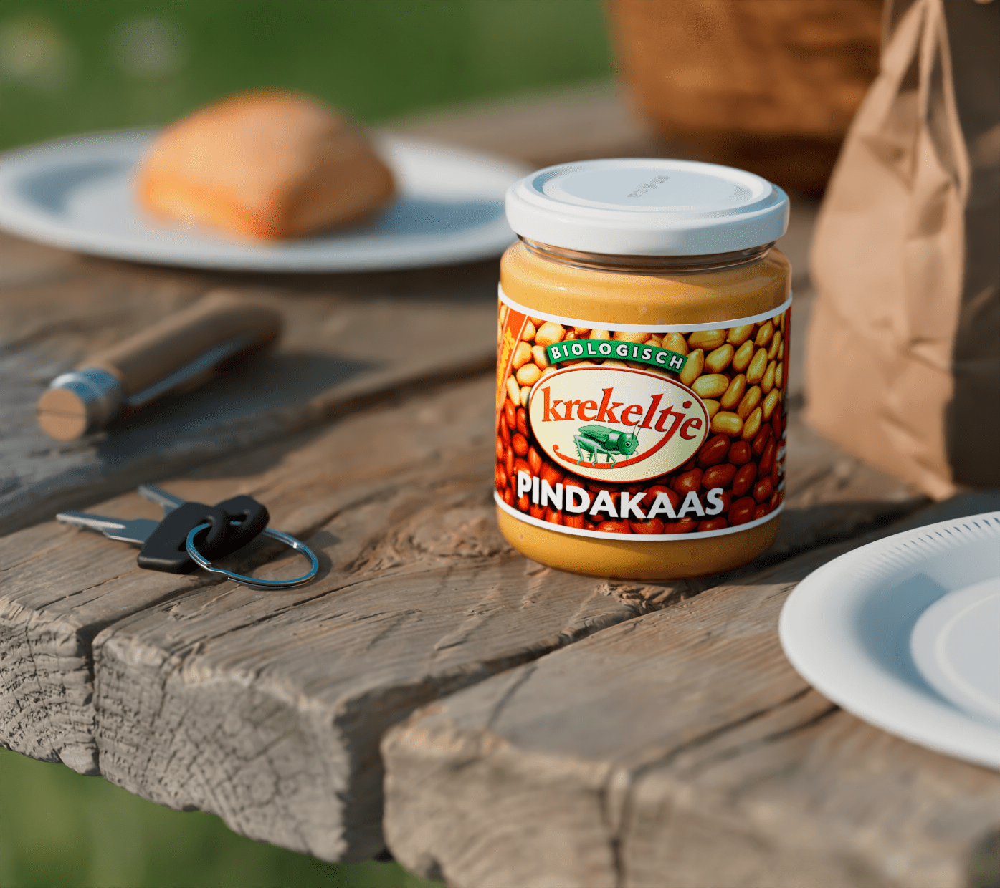

Horizon
Het breedste assortiment. Biologische noten, zaden, pasta's en stropen — zoals het hoort.
Zien wat we maken →Geen water bij de wijn.
Biologisch eten was ooit een overtuiging van een kleine groep pioniers. Vandaag bouwen we samen met winkels, distributeurs en partners aan een systeem waarin biologisch niet langer een alternatief is, maar de norm.
Geen water bij de wijn — wat goed is, hoeft niet onderhandeld te worden.
Niks meer, niks minder. 100% voedzaam, 0% onnodige toevoegingen.

Horizon notenpasta
Pindakaas
Amandelpasta
Cashewpasta
TahinWaar we elke dag op bouwen — van IJsselstein tot het schap.
We doen wat we beloven en blijven trouw aan onze principes. Geen verborgen agenda's, geen loze claims.
Onze liefde voor alles dat groeit en bloeit is net zo puur als onze droom. Die pure smaken hebben niet met gierigheid te maken.
We strijden voor onze eigen manier en idealen. We gaan niet gedachteloos mee met trends of hypes.
We zijn letterlijk en figuurlijk verbonden met de aarde. Bevlogen, maar met beide benen op de grond.
We dromen groot. Echte verandering begint met idealen — en de vastberadenheid om ze waar te maken.
Elk met een eigen karakter. Allemaal 100% biologisch.
Het breedste assortiment. Biologische noten, zaden, pasta's en stropen — zoals het hoort.
Zien wat we maken →
Notenpasta voor Europa. Direct van de boom, tot in de pot. Verder geen gedoe.
Zien wat we maken →
Pindakaas. Geroosterd en gemalen. Niks meer. Roosteren, malen en klaar — lekker hè?
Zien wat we maken →
Voor kinderen en gezinnen. Puur genot — zonder verrassingen op het etiket.
Zien wat we maken →We werken graag samen met partners die geloven dat biologisch de norm moet zijn — niet het alternatief.
Van natuurvoedingswinkel tot supermarkt. Wij denken mee over assortiment, schap en marge.
Nationaal en Europees. Betrouwbare levering vanuit IJsselstein, met echte mensen aan de lijn.
Horeca, catering en specialty. Grootverpakking en bulk voor wie dagelijks met kwaliteit werkt.